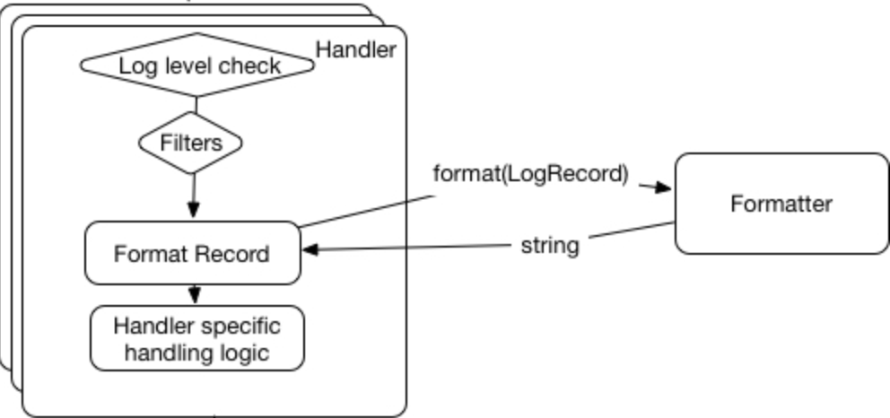

工具命令
Table of Contents
Table of Contents
| Author | Hao Ruan (haoru@cisco.com) |
| Date | 2019-08-30 20:54:33 |
1 虚拟环境
1.1 几种工具的区别
virtualenv
可以针对版本的 Python 生成多个独立的虚拟环境
pyenv
用于创建独立的 Python 环境，可以通过
pyenv install来安装具体版本的 Pythonpyenv-virtualenv
pyenv 作者为 pyenv 写的一个插件，通过该插件可以方便的同时使用 pyenv 和 virtualenv
1.2 pyenv 自动补全脚本
eval "$(pyenv init -)" if which pyenv-virtualenv-init > /dev/null; then eval "$(pyenv virtualenv-init -)"; fi
1.3 pyenv 常用命令
1.3.1 查看本机安装所有版本信息
pyenv versions
1.3.2 查看可安装版本信息
pyenv install -l
1.3.3 安装与卸载
pyenv install 3.6.0
pyenv uninstall 3.6.0
1.3.4 切换版本
1.3.4.1 全局方式
通过将版本号写入 ~/.pyenv/version 文件。
pyenv global 2.7.3
1.3.4.2 当前目录方式
通过将版本号写入当前目录下的 .python-version 文件。
通过这种方式设置的 Python 版本优先级较 global 高 。 pyenv 会从当前目录开始向上逐级查找 .python-version 文件，直到根目录为止。若找不到，就用 global 版本。
pyenv local 2.7.3
1.3.4.3 shell 方式
通过设置当前 shell 的 PYENV_VERSION 环境变量。
这个版本的优先级比 local 和 global 都要高 。
pyenv shell 2.7.3
pyenv shell --unset
1.3.5 创建垫片路径
为所有已安装的可执行文件创建 shims，如：~/.pyenv/versions/*/bin/*，因此， 每当增删了 Python 版本或带有可执行文件的包（如 pip）以后，都应该执行一次本命令:
pyenv rehash
1.4 pyenv-virtualenv 常用命令
1.4.1 创建指定版本的虚拟环境
pyenv virtualenv 2.7.10 <name>
1.4.2 基于当前版本创建虚拟环境
pyenv virtualenv <name>
1.4.3 列出所有虚拟环境
pyenv vitualenvs
1.4.4 激活/去激活虚拟环境
pyenv activate <name>
pyenv deactivate
1.4.5 删除虚拟环境
pyenv uninstall <name>
1.5 使用 Python 自带工具
$ python3.7 -m venv ./py37async $ source ./py37async/bin/activate $ pip install --upgrade pip
2 打包安装
2.1 egg 方式
python setup.py install
2.2 wheel 方式
pip install wheel python setup.py bdist_wheel --universal # universal is to creates a py2.py3 wheel pip install <wheel-file>
3 UnitTest
3.1 范例
3.1.1 基本用法
import unittest class TestStringMethods(unittest.TestCase): # executed before each test method # If the setUp() method raises an exception while the test is running, # the framework will consider the test to have suffered an error, # and the test method will not be executed. def setUp(self): pass # executed after each test method # if setUp() succeeded, tearDown() will be run whether the test method succeeded or not. def tearDown(self): pass def test_upper(self): self.assertEqual('foo'.upper(), 'FOO') def test_isupper(self): self.assertTrue('FOO'.isupper()) self.assertFalse('Foo'.isupper()) def test_split(self): s = 'hello world' self.assertEqual(s.split(), ['hello', 'world']) # check that s.split fails when the separator is not a string with self.assertRaises(TypeError): s.split(2) if __name__ == '__main__': unittest.main()
3.1.2 Test Suite
def suite(): suite = unittest.TestSuite() suite.addTest(WidgetTestCase('test_default_widget_size')) suite.addTest(WidgetTestCase('test_widget_resize')) return suite if __name__ == '__main__': runner = unittest.TextTestRunner() runner.run(suite())
from unittest import TestLoader, TestSuite from HtmlTestRunner import HTMLTestRunner import ExampleTestClass import Example2TestClass example_tests = TestLoader().loadTestsFromTestCase(ExampleTestsClass) example2_tests = TestLoader().loadTestsFromTestCase(Example2TestClass) suite = TestSuite([example_tests, example2_tests]) runner = HTMLTestRunner(output='example_suite') runner.run(suite)
3.2 Command-Line Interface
python -m unittest test_module1 test_module2 python -m unittest test_module.TestClass python -m unittest test_module.TestClass.test_method
4 Logging
4.1 处理逻辑
start : logger.info("Hello, %s", name); if (Is this logger enable for the level?) then (yes) : Create LogRecord; if (The record is loggable by consulting all the logger filters?) then (yes) : Pass a record to all relevant handlers (callHandlers); endif endif stop
4.1.1 callHandlers 逻辑
def callHandlers(self, record): """ Pass a record to all relevant handlers. Loop through all handlers for this logger and its parents in the logger hierarchy. If no handler was found, output a one-off error message to sys.stderr. Stop searching up the hierarchy whenever a logger with the "propagate" attribute set to zero is found - that will be the last logger whose handlers are called. """ c = self found = 0 while c: for hdlr in c.handlers: found = found + 1 if record.levelno >= hdlr.level: hdlr.handle(record) if not c.propagate: c = None #break out else: c = c.parent if (found == 0): if lastResort: if record.levelno >= lastResort.level: lastResort.handle(record) elif raiseExceptions and not self.manager.emittedNoHandlerWarning: sys.stderr.write("No handlers could be found for logger" " \"%s\"\n" % self.name) self.manager.emittedNoHandlerWarning = True
4.1.1.1 Handler 处理逻辑
